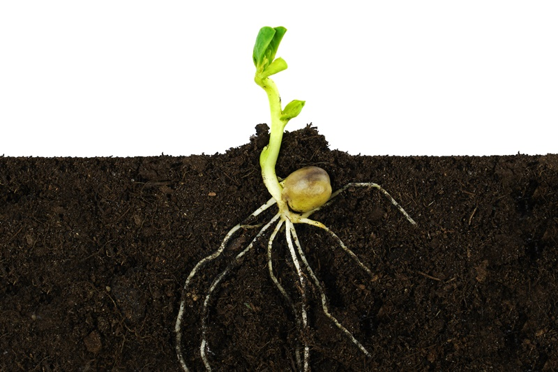
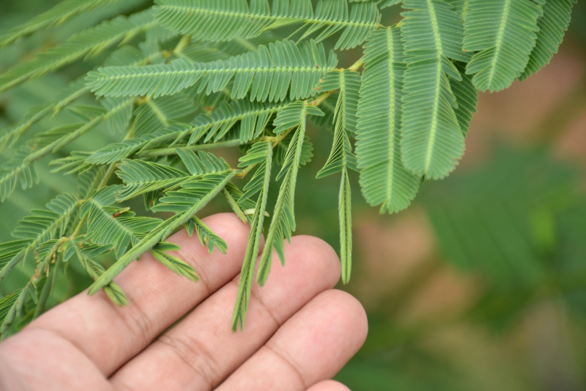

ภาพ : shutterstock.com
สิ่งเร้า (Stimulus) คือ สิ่งที่มีผลและมีอิทธิผลเป็นตัวกระตุ้นให้เกิดการโต้ตอบแสดงพฤติกรรมต่างๆออกมาเพื่อเป็นการตอบสนองต่อสิ่งเร้านั้นๆ สิ่งมีชีวิตบนโลกนี้ต้องมีการตอบสนองต่อสิ่งเร้า เพื่อปรับตัวให้เหมาะสมกับสภาพแวดล้อมและเพื่อเป็นดำรงเผ่าพันธุ์ให้อยู่รอดต่อไป ซึ่งมีการแสดงออกแตกต่างกัน การตอบสนองต่อสิ่งเร้าของพืช คือ การที่พืชมีการปรับตัวให้เข้ากับสิ่งแวดล้อมต่าง ๆ เมื่อถูกกระตุ้นจาก แสง อุณหภูมิ ความชื้น การสัมผัส และแรงโน้มถ่วงของโลก เพื่อให้พืชสามารถดำรงชีวิตอยู่ได้ โดยสามารถจำแนกได้ออกเป็นสิ่งเร้าภายในและสิ่งเร้าภายนอก
สิ่งเร้าภายใน ที่มีผลต่อการแสดงพฤติกรรมการตอบสนองของพืชนั้น คือ ฮอร์โมน ซึ่งฮอร์โมนจะควบคุมการเจริญเติบโตของพืช ถูกผลิตโดยเซลล์ที่อยู่บริเวณปลายรากและปลายยอดพืชจะกระตุ้นการเจริญเติบโตของยอดพืชแต่จะยับยั้งการเจริญของราก ฮอร์โมนของพืชต่างๆ จะถูกกระตุ้นจากสิ่งเร้าภายนอก คือ แสงและแรงดึงดูดของโลก 2 กรณี ดังนี้
การตอบสนองของพืชต่อแสง (Phototropism) เมื่อพืชได้รับความเข้มของแสงไม่เท่ากันทุกด้าน พืชจะโค้งหรือเอียงยอดไปทางที่มีความเข้มข้นของแสงมากกว่าเสมอ
การตอบสนองของพืชต่อแรงโน้มถ่วงของโลก (Geotropism) รากพืชจะเจริญไปในทิศทางเดียวกับแรงโน้มถ่วงของโลก ส่วนลำต้นจะเจริญไปในทิศทางตรงข้ามกับแรงโน้มถ่วงของโลก
สิ่งเร้าภายนอก ได้แก่ แสง อุณหภูมิ น้ำ และการสัมผัส ซึ่งสิ่งเร้าเหล่านี้จะไปกระตุ้นให้ฮอร์โมนที่เกี่ยวข้องกับการเจริญเติบโตของพืชกระจายไปยังส่วนต่าง ๆ ในปริมาณที่ไม่เท่ากันโดยพืชมีการตอบสนองต่อสิ่งเร้าต่าง ๆ ดังนี้
- การตอบสนองต่อแสงพืชส่วนใหญ่จะมีการตอบสนองต่อแสง โดยเฉพาะพืชที่ได้รับความเข้มของแสงไม่เท่ากันทุกด้าน พืชจะโค้งไปทางที่มีความเข้มข้นของแสงมากกว่า การตอบสนองต่อแสงที่ไม่เท่ากันนี้มักจะพบกับพืชที่ปลูกในที่ร่ม ทำให้พืชพยายามที่หันไปทางด้านที่แสงส่องมา เช่น
- การปลูกต้นไม้ใกล้หน้าต่าง ต้นไม้จะหันยอดไปทางหน้าต่าง ต้นทานตะวันจะหันดอกตามทิศทางการส่องแสงของดวงอาทิตย์ตลอดทั้งวันตั้งแต่เช้าจรดเย็น
- การหุบและการบานของดอกไม้ มีแสงมากระตุ้นให้กลุ่มเซลล์ด้านนอกและด้านในมีอัตราการเจริญเติบโตแตกต่างกัน ซึ่งนักวิทยาศาสตร์ได้อธิบายเหตุผลการหุบและการบานของดอกไม้ไว้ ดังนี้
1) การหุบของดอกไม้ เกิดจากกลุ่มเซลล์ที่อยู่ด้านนอกของกลีบดอกมีการเจริญเติบโตเร็วกว่าเซลล์ที่อยู่ด้านใน
2) การบานของดอกไม้ เกิดจากกลุ่มเซลล์ที่อยู่ด้านในของกลีบดอกมีการเจริญเติบโตเร็วกว่ากลุ่มเซลล์ที่อยู่ด้านนอก
- การตอบสนองต่ออุณหภูมิ ทำให้เกิดการเคลื่อนไหวได้ เช่น การบานของดอกบัวสวรรค์ ทิวลิป เมื่อได้รับอุณหภูมิสูง ต้นเมเปิลจะเปลี่ยนจากสีเขียวเป็นสีเหลืองแล้วค่อย ๆ หลุดร่วงไปเพื่อลดการคายน้ำในช่วงที่มีอุณหภูมิต่ำลงในฤดูหนาว
- การตอบสนองต่อน้ำ การตอบสนองของพืชต่อปริมาณน้ำ สังเกตได้จากพืชที่เจริญเติบโตในบริเวณที่แห้งแล้ง เช่น กระบองเพชร พืชที่เจริญเติบโตในทะเลทรายจะต้องมีการปรับตัวเพื่อตอบสนองต่อปริมาณน้ำที่มีน้อย โดยพืชบางชนิดจะลดขนาดของใบหรือเปลี่ยนให้อยู่ในรูปของหนามเพื่อลดการสูญเสียน้ำ
- การตอบสนองต่อการสัมผัส การตอบสนองต่อการสัมผัสของพืชมีหลายรูปแบบ เช่น ใบไมยราบเมื่อถูกสัมผัส ใบจะหุบ เนื่องจากที่โคนของใบมีต่อมรับสัมผัสเมื่อถูกกระตุ้นจะส่งความรู้สึกไปยังใบ ทำให้ใบหุบได้หรือต้นหม้อข้าวหม้อแกงลิง เมื่อแมลงตกลงไปฝาใบจะปิดทันทีหรือต้นกาบหอยแครง เมื่อแมลงมาสัมผัสในส่วนของใบที่มีลักษณะคล้ายฝา ฝานั้นจะถูกปิดเข้าหากัน ทำให้แมลงไม่สามารถหลุดรอดออกมาได้
ตอบสนองที่เกิดจากสิ่งเร้าภายในของต้นพืชเอง
- การเอนหรือแกว่งยอดไปมา (nutation movement) เป็นการเคลื่อนไหวที่เกิดเฉพาะที่ยอดของพืชบางชนิด เช่น ถั่ว ทำให้ปลายยอดเอนหรือแกว่งไปมา ในขณะที่พืช เจริญเติบโตทีละน้อยเนื่องจากกลุ่มเซลล์ 2 ด้านของลำต้นเจริญเติบโตไม่เท่ากัน
- การบิดลำต้นไปรอบๆเป็นเกลียว (spiral movement) เป็นการเคลื่อนไหวที่ปลายยอดบิดเป็นเกลียว เมื่อพืชเจริญเติบโตขึ้นทำให้ลำต้นบิดเป็นเกลียวพันรอบแกน หรือพันอ้อมหลักขึ้นไปเป็นการพยุงลำต้นไว้ เช่น การพันหลักของต้นพริกไทย ต้นพลู เป็นต้น
- การเคลื่อนไหวที่เกิดเนื่องจากการเปลี่ยนแปลงแรงดันเต่ง (turgor movement) เซลล์พืชดูดน้ำเข้าไป เซลล์จะเต่งขึ้น เพราะเกิดแรงดันเต่ง ทำให้พืชกางใบออกได้เต็มที่ แต่ถ้าเสียน้ำไปใบจะเหี่ยวหรือเฉาลง การเคลื่อนไหวหรือการตอบสนองแบบนี้ปกติพืชจะมีการเคลื่อนไหวตอบสนองต่อการสัมผัส (สิ่งเร้าจากภายนอก) ช้ามาก แต่มีพืชบางชนิดที่ตอบสนองได้เร็ว โดยการสัมผัสจะไปทำให้มีการเปลี่ยนแปลงของปริมาณ น้ำภายในเซลล์ ทำให้แรงดันเต่งของเซลล์เปลี่ยนแปลงไป ซึ่งเป็นไปอย่าง รวดเร็วและไม่ถาวร ซึ่งมีหลายแบบ คือ
- การหุบของใบจากการสะเทือน - การหุบใบของต้นไมยราบ โดยจะเกิดขึ้นบริเวณโคนก้านใบและโคนก้านใบย่อย มีความไวสูงต่อสิ่งเร้าที่มากระตุ้นเช่น การสัมผัส เมื่อสิ่งเร้ากระตุ้นจะมีผลทำให้แรงดันเต่ง เปลี่ยนแปลงอย่างรวดเร็วคือเซลล์จะสูญเสียน้ำให้กับเซลล์ข้างเคียงทำให้ใบหุบลงทันทีหลัง
- การหุบของใบพืชพวกที่มีการเปลี่ยนแปลงรูปร่างไปเพื่อจับแมลง เช่น ใบของต้นหม้อข้าวหม้อแกงลิง มีการเปลี่ยนแปลงรูปร่างของใบเพื่อทำหน้าที่จับแมลง เมื่อแมลงบินมาเกาะก็จะตอบสนองโดยการหุบใบทันที พร้อมทั้งปล่อยเอนไซม์ออกมาย่อยแมลงเป็นอาหา
- การหุบใบตอนพลบค่ำของพืชต่าง ๆ เช่น ใบก้ามปู ใบมะขาม ใบไมยราบ ใบถั่ว ใบแค ใบกระถิน ใบผักกระเฉด รวมไปถึงพืชตระกูลถั่ว เป็นการตอบสนองต่อการเปลี่ยนแปลงความเข้มของแสง โดยที่ใบจะหุบ ก้านใบจะห้อยและลู่ลงในตอนพลบค่ำ เนื่องจากแสงสว่างลดลง
